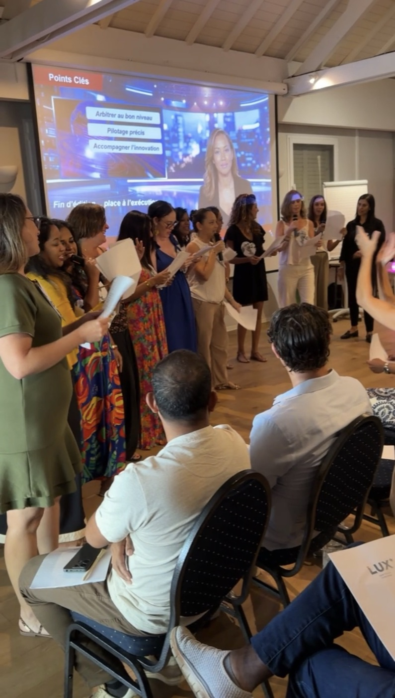

C'est le rendez-vous institutionnel n°1 de l'année : la cérémonie des vœux du maire, en janvier, donne le ton du mandat devant les agents, les forces vives, les associations et la presse. Un événement court, très codifié, sans droit à l'erreur — et qui, bien organisé, devient un vrai moment de fierté communale. Voici le guide complet, du déroulé type au calendrier de préparation.
Le déroulé type d'une cérémonie qui fonctionne
- Accueil et émargement — hôtesses, vestiaire, placement des personnalités : les invités doivent se sentir attendus ;
- Rétrospective vidéo — 3 à 5 minutes d'images de l'année écoulée : le moment d'émotion qui remplace dix diapositives ;
- Le discours — sonorisation impeccable, pupitre, éclairage scénique, prompteur si besoin : le maire doit être vu et entendu de partout ;
- Les mises à l'honneur — médailles, agents méritants, champions sportifs : la reconnaissance publique qui fait la valeur de la soirée ;
- Le cocktail — traiteur péi, service fluide : c'est là que la commune « parle » vraiment avec ses invités ;
- Une touche de spectacle — intermède musical ou dansé : la respiration qui transforme une cérémonie en moment.

Les 3 pièges classiques des vœux
La sono défaillante — un discours qu'on n'entend pas au fond de la salle ruine l'événement ; le test technique se fait la veille, pas à 17 h 30 pour une cérémonie à 18 h. Le protocole improvisé — ordre des prises de parole, préséances, accueil des personnalités : cela se prépare avec le cabinet, par écrit. Le timing qui dérape — au-delà de 45 minutes de partie officielle, la salle décroche ; un déroulé minuté et un régisseur qui le tient font la différence entre une cérémonie et une épreuve.
Le calendrier de préparation
Octobre : lieu, date et budget arrêtés. Novembre : prestataire retenu, rétrospective vidéo lancée (il faut le temps de collecter les images de l'année). Début décembre : invitations parties, déroulé validé avec le cabinet. Janvier : répétition technique la veille, cérémonie sereine le jour J. Les communes qui s'y prennent en décembre courent après tout — y compris après les dates, janvier étant embouteillé de vœux.
Bon à savoir : la rétrospective vidéo se prépare toute l'année. Notre studio filme les événements de la commune au fil des mois (voir la captation des événements municipaux) — en janvier, le film est déjà à moitié fait.
La formule clé en main pour les communes
Scène, sonorisation, éclairage, rétrospective vidéo, animation micro, hôtesses et protocole, traiteur, coordination du jour J : Pull Up Événements livre la cérémonie complète — le cabinet garde le discours, nous faisons tout le reste. C'est le prolongement naturel de notre travail sur les événements institutionnels des collectivités. Vos vœux 2027 se préparent dès octobre : 06 93 81 78 82 — devis sous 48 h.